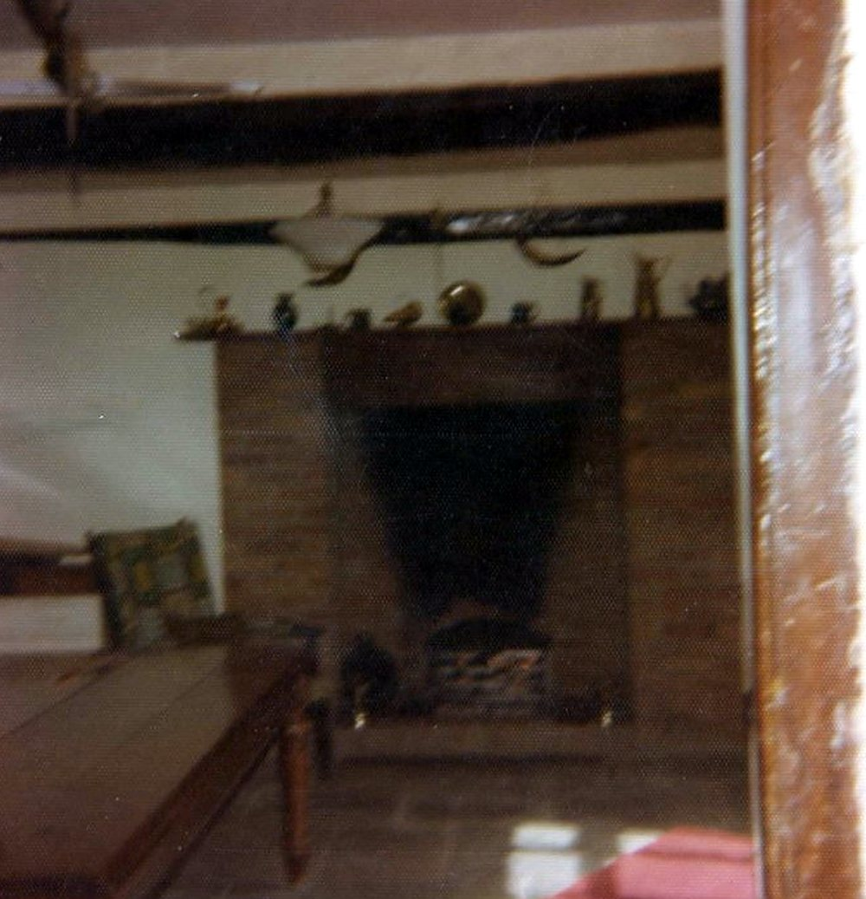
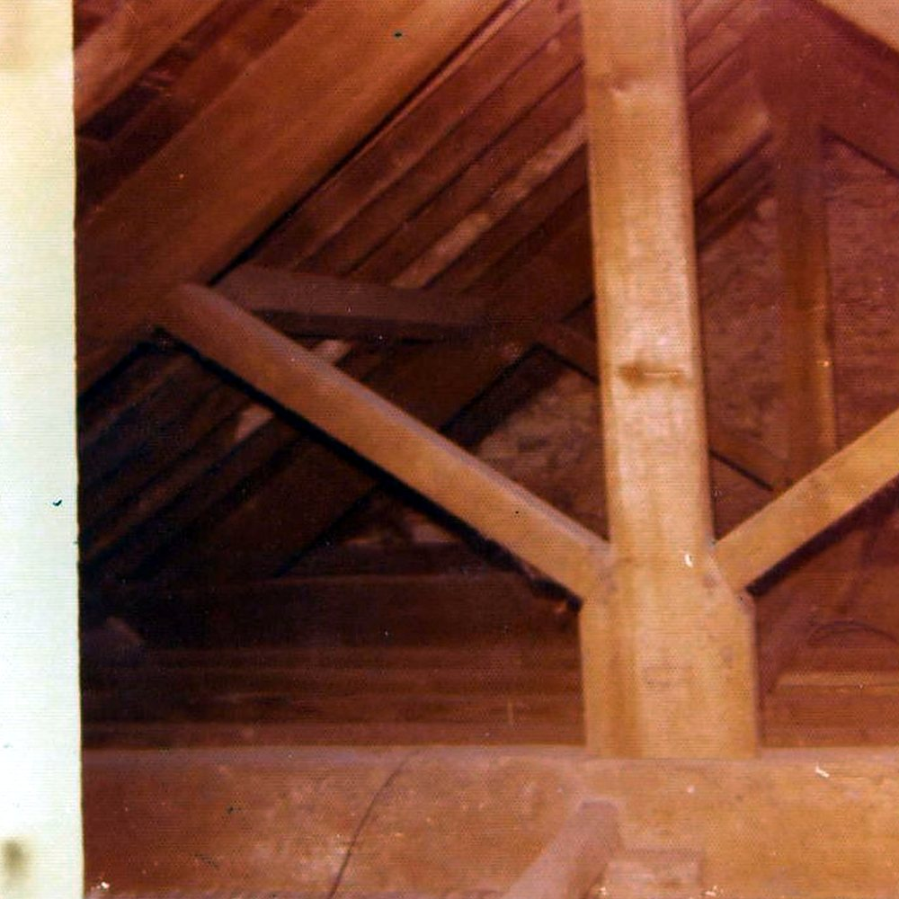
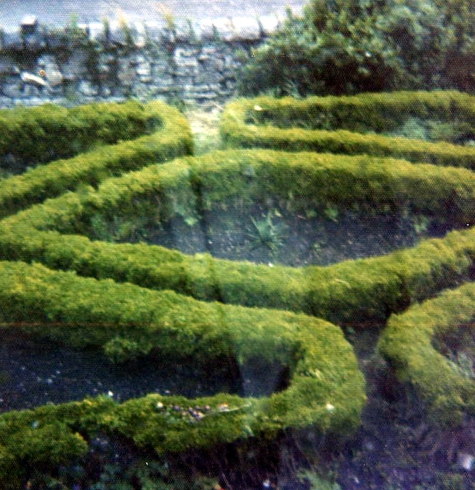

The house and its fabric
The farm album shows a long stone farmhouse with a timber porch, deep chimneys and an inglenook hearth, a staircase of some age, exposed roof timbers and a walled garden laid out as a knot garden. The building was surveyed for the national monuments record in 1974.
1974 — The H. J. Thomas survey and floor plan
- Record:
EV-0047 (Legal Wiki, Evidence Register)
What the record shows. The Royal Commission on the Ancient and Historical Monuments of Wales holds survey material by H. J. Thomas: a 1974 survey and floor plan of the house, described as a sub-medieval or late-seventeenth-century building.
What it does not show. The full survey is not yet held here; its wording and extent are SOURCE PENDING.
19 November 1974 or 1977 — “Grievous loss”: a letter to the Western Mail
- Record:
EV-0051 (Legal Wiki, Evidence Register)
“the farmstead of Great House, or Ty Mawr, which still embodies some of its earlier features, serving as the manorhouse of Llandough.”
What the record shows. A letter signed William Rees, Penarth, opposed the demolition of the farmhouse and called it the manor house of Llandough.
What it does not show. The writer’s identity and the year are not settled. It is an opinion published as a letter, not a building record.
26 October 1983 — Noted in conservation reports
- Record:
EV-0072 (Legal Wiki, Evidence Register)
What the record shows. The South Wales Echo reported that the Community Council and the Vale planners had Great House Farm in view as a notable building.
What it does not show. It records no listing, protection or decision.


The inglenook fireplace, from the farm’s own album (Part 1, no. 064). Source: Wayback Vault, album image.



Roof timbers, from the farm’s own album (Part 1, no. 080). Source: Wayback Vault, album image.



The walled knot garden, from the farm’s own album (Part 1, no. 113). Source: Wayback Vault, album image.